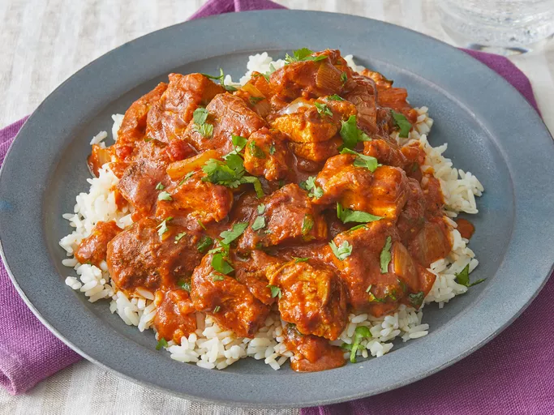

Chicken Tikka Masala

My Favorite dish with rice!
Simple dish that goes really well with rice. I love loading it up with hot spices which gives this dish a great flavor.
My wife then girlfriend at the time took me to an Indian restaurant for a date night, and ever since then I enjoy Indian dishes.
Ingredients
- 1 cup of yogurt
- 1 tablespoon lemon juice
- 4 teaspoons ground cumin, divided
- 1 teaspoon ground cinnamon
- 2 teaspoons cayenne pepper
- 2 teaspoons freshly ground black pepper
- 1 tablespoon minced fresh ginger
- 2 teaspoons salt, divided, or more to taste
- 3 boneless skinless chicken breasts, cut into bite-size pieces
- 4 long skewers
- 1 tablespoon butter
- 1 clove garlic, minced
- 1 jalapeno pepper, finely chopped
- 2 teaspoons paprika
- 1 (8 ounce) can tomato sauce
- 1 cup heavy cream
- 1/4 cup chopped fresh cilantro
Steps
- Combine yogurt, lemon juice, 2 teaspoons cumin, cinnamon, cayenne, black pepper, ginger, and 1 teaspoon salt in a large bowl.
- Stir in chicken, cover, and refrigerate for 1 hour.
- Preheat a grill for high heat.
- Lightly oil the grill grate. Thread chicken onto skewers, and discard marinade.
- Grill until juices run clear, about 5 minutes on each side.
- Melt butter in a large heavy skillet over medium heat. Sauté garlic and jalapeño for 1 minute. Season with remaining 2 teaspoons cumin, paprika, and remaining 1 teaspoon salt. Stir in tomato sauce and cream. Simmer on low heat until sauce thickens, about 20 minutes.
- Add grilled chicken, and simmer for 10 minutes. Transfer to a serving platter, and garnish with fresh cilantro.
- Serve over rice.